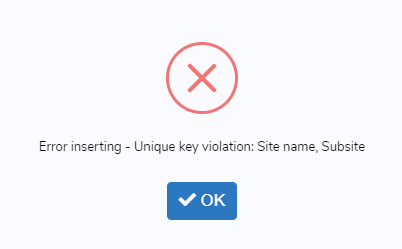

Pleistocene RSL
Note
This section has been designed by A. Rovere and D. Ryan
This section describes the fields included in the ‘RSL proxies’ file/sheet, created from the ‘rsl’ mySQL table. In the interface, the fields below can be found under ‘RSL datapoint from stratigraphy’ page.
General information
Site name - Name of the site. This could be a local geographic name, or the name of the town/city where the site is located.
Subsite - Survey name or transect number assigned to the site. This may also include a sub-facies within the sea level sequence.
Note
In the interface, the combination of Site and Subsite is set as ‘Unique key’. This means that if a user tries to insert an existing Site-Subsite combination, it will not be accepted as valid by the interface and the record will not be saved. The following message will appear
{kind=link}
Nation - The nation where the site is located.
Warning
The value for this field is selected from the ‘countries’ table. No foreign keys are defined in the database. If the required nation is not listed in the interface, please leave a bug report.
Region - The administrative region, province or administrative unit where the site is located.
Warning
The value for this field is selected from the ‘regions’ table. No foreign keys are defined in the database. If the required region/administrative unit is not listed in the interface, please leave a bug report.
Note
Nations and Regions derived from a simplified version of this database, which includes data created by MaxMind, available from http://www.maxmind.com/. Refer to these links for further use and/or redistribution
Main reference - The main reference from which RSL information has been extracted. This is usually the reference describing the site and reporting measurement and dating details.
Warning
The value for this field is selected from the ‘references’ table. It is set as foreign key in the ‘rsl’ table.
Additional References - Select further references describing the site. Ideally this field includes all the historical references reporting on the site.
Warning
The values for this field are selected from the ‘references’ table. The ID values are stored as comma-separated. No foreign keys are defined in the database.
Note
The initial set of paleo-sea level references was derived from the works of Pedoja et al (2014), Hibbert et al (2016), and Ferranti et al (2006)
Latitude (decimal degrees) - Latitude of the site, in decimal degrees.
Longitude (decimal degrees) - Longitude of the site, in decimal degrees.
Horizontal Positioning Technique - Define the positioning technique used to establish the site Lat/Long coordinates. New positioning techniques can be added as necessary within the ‘Metadata -> Geographic positioning’ menu.
Warning
The value for this field is selected from the ‘hrzpostech’ table. No foreign keys are defined in the database.
Is this a marine/terrestrial limiting record? - Indicate if the record inserted is: 1) marine or 2) terrestrial limiting, or 3) sea level indicator. The following fields will update accordingly. For a definition of marine/terrestrial limiting in MIS 5e, see Rovere et al (2016).
Note
In the interface, if (marine or terrestrial) limiting point is selected, a message appears: Marine or Terrestial limiting, no paleo RSL calculations are possible Contextually, the field Type of RSL indicator is hidden and associated value = 0, that corresponds to marine or terrestrial limiting in the ‘rsl_ind’ table. Also the following fields are hidden: Upper limit of modern analog (m),*Lower limit of modern analog (m)*, Quantification of indicative meaning,*Reference Water Level (m)*, Indicative Range (m),*Paleo Relative Sea Level (m)*, Paleo Relative Sea Level Uncertainty (m). If sea level index point is selected, all the fields above are shown and made mandatory.
Type of RSL Indicator - Sea level indicator that was reported at the site. New sea level indicators can be added as necessary within the ‘Metadata -> Type of RSL indicator’ menu.
Warning
The value for this field is selected from the ‘rsl_ind’ table. No foreign keys are defined in the database.
Warning
In the interface, this field appears only if ‘Sea Level indicator’ is selected in the field ‘Is this a marine/terrestrial limiting record?’
Indicator description - Describe the indicator/limiting point and its site-specific properties.
Elevation and paleo RSL
Upper limit of modern analog (m) - Elevation of the highest point at which the facies/landform occurs along the modern shoreline.
Warning
In the interface, this field appears only if ‘Sea Level indicator’ is selected in the field ‘Is this a marine/terrestrial limiting record?’
Lower limit of modern analog (m) - Elevation of the lowest point at which the facies/landform occurs along the modern shoreline.
Warning
In the interface, this field appears only if ‘Sea Level indicator’ is selected in the field ‘Is this a marine/terrestrial limiting record?’
Quantification of Indicative meaning - Indicate how the indicative meaning has been quantified. Two selections are possible:
IMCalc - Using the tool developed by Lorscheid and Rovere (2019)
Modern analog data - From modern analog data available for the study area. See example in Rovere et al (2016)
Tip
IMCalc is open access, runs on Java and can be downloaded from SourceForge
Warning
In the interface, this field appears only if ‘Sea Level indicator’ is selected in the field ‘Is this a marine/terrestrial limiting record?’
Sea level datum - Vertical datum to which the elevations are referred.
Warning
The value for this field is selected from the ‘sldatum’ table. No foreign keys are defined in the database.
Elevation measurement technique - Method employed to measure elevations.
Warning
The value for this field is selected from the ‘vertmeastech’ table. No foreign keys are defined in the database.
Do you want to insert upper and lower elevation limits? - Select ‘Yes’ if the sea level indicator was measured as two-points elevation. ‘No’ to insert only a single point elevation. See illustration below.
{kind=link}
Note
In the interface, if ‘Yes’ is selected, the fields Upper elevation of indicator (m), Lower elevation of indicator (m) and Upper/Lower elevation measurement error (m) appear. The fields RSL indicator elevation (m) and RSL indicator elevation error (m) are disabled and calculated automatically averaging the values above. Every time the answer is changed, the content of the fields RSL indicator elevation (m) and RSL indicator elevation error (m) is deleted.
Lower elevation of indicator - The lower measured elevation of the sea level indicator.
Warning
In the interface, this field appears and is mandatory only if ‘Yes’ is selected in the field ‘Do you want to insert upper and lower elevation limits?’
Upper elevation of indicator - The upper measured elevation of the sea level indicator.
Warning
In the interface, this field appears and is mandatory only if ‘Yes’ is selected in the field ‘Do you want to insert upper and lower elevation limits?’
Upper/Lower elevation measurement error (m) - Insert here the elevation measurement error for the Upper and Lower elevation measurements. Insert ±1-sigma values.
Warning
In the interface, this field appears and is mandatory only if ‘Yes’ is selected in the field ‘Do you want to insert upper and lower elevation limits?’
RSL indicator elevation (m) - Elevation of the RSL indicator, in meters and with up to two decimal digits.
Note
In the interface, this value is auto-calculated if upper and lower elevation limits are specified above.
RSL indicator elevation error (m) - Elevation error associated with the elevation measurement, in meters and with up to two decimal digits. For GPS and similar instrumental measurement, use ±1 sigma error levels.
Note
In the interface, this value is auto-calculated if upper and lower elevation limits are specified above.
Notes on elevation - Insert comments on how elevation data has been obtained / treated.
Reference Water Level (m) - The reference water level is calculated from the Upper and lower limits of modern analog inserted above, from the formulas in in Rovere et al (2016).
Warning
In the interface, this field appears and is mandatory only if ‘Sea Level indicator’ is selected in the field ‘Is this a marine/terrestrial limiting record?’
Indicative Range (m) - The indicative range is calculated from the Upper and lower limits of modern analog inserted above, from the formulas in in Rovere et al (2016).
Warning
In the interface, this field appears and is mandatory only if ‘Sea Level indicator’ is selected in the field ‘Is this a marine/terrestrial limiting record?’
Paleo Relative Sea Level (m) - Paleo Relative sea level is calculated from the elevation and reference water level, from the formulas in in Rovere et al (2016).
Warning
In the interface, this field appears and is auto-calculated only if ‘Sea Level indicator’ is selected in the field ‘Is this a marine/terrestrial limiting record?’
Paleo Relative Sea Level Uncertainty (m) - Paleo Relative sea level uncertainty is calculated from the elevation error and indicative range, from the formulas in in Rovere et al (2016).
Warning
In the interface, this field appears and is auto-calculated only if ‘Sea Level indicator’ is selected in the field ‘Is this a marine/terrestrial limiting record?’
Vertical land movements
Is data on vertical land movements (independent from the sea level record) available? - Select ‘Yes’ or ‘No’ depending on the available data.
Tip
Compile data on vertical land movements only if independent vertical land motions are available for the site. Tectonic rates characterized by circularity (e.g., derived calculating the departure from Last Interglacial global mean sea level) should not be inserted
Tectonic category - Three values are available: ‘Stable’, ‘Uplifting’ and ‘Subsidence’.
Comments on tectonic category - Comments on the selection of the tectonic category.
Published VLM rate (m/ky) - Vertical land motion rate as originally reported.
Published VLM rate uncertainty (m/ky) - Vertical land motion uncertainty as originally reported. If not reported, insert N/A.
Interpreted VLM rate (m/ky) - Vertical land motion rate as re-interpreted by the reviewer.
Interpreted VLM rate uncertainty (m/ky) - Vertical land motion uncertainty, as re-interpreted by the reviewer. If not reported, insert N/A.
Comments on VLM rates - Description of how the VLM rates reported have been calculated or re-calculated.
Age constraints
Age attribution - Insert in this field one or more methods of age attribution. In the database, ‘Age attribution’ is coded in the following way:
Value |
Associated dating technique |
|---|---|
1 |
U-Series |
2 |
Amino Acid Racemization |
3 |
Luminescence |
4 |
Electron Spin Resonance |
5 |
Stratigraphic context/age |
6 |
Other |
Warning
At least one age constraint should be associated with the datapoint
Note
In the interface, once an age attribution method is selected, fields related to it appear and are made mandatory.
U-Series constraint - Indicate if the RSL datapoint is ‘Equal to’, ‘Older than’, ‘Younger than’ the U-Series age constraint(s) inserted below.
U-Series age IDs - Select the U-Series age IDs. The list is created from all the ages present in the ‘Useries_Corals’ table.
Note
‘Useries_Corals’ contains all U-Series ages, on corals, mollusks and speleothems. The table name is a legacy from an older database version.
Warning
The values for this field are selected from the ‘Useries_Corals’ table. The ID values are stored as comma-separated. No foreign keys are defined in the database.
AAR constraint - Indicate if the RSL datapoint is is ‘Equal to’, ‘Older than’, ‘Younger than’ the AAR age constraint(s) inserted below.
AAR age IDs - Select the AAR age IDs. The list is created from all the ages present in the ‘aar’ table.
Warning
The values for this field are selected from the ‘aar’ table. The ID values are stored as comma-separated. No foreign keys are defined in the database.
Luminescence constraint - Indicate if the RSL datapoint is is ‘Equal to’, ‘Older than’, ‘Younger than’ the luminescence age constraint(s) inserted below.
Luminescence age IDs - Select the luminescence age IDs. The list is created from all the ages present in the ‘luminescence’ table.
Warning
The values for this field are selected from the ‘luminescence’ table. The ID values are stored as comma-separated. No foreign keys are defined in the database.
ESR constraint - Indicate if the RSL datapoint is is ‘Equal to’, ‘Older than’, ‘Younger than’ the ESR age constraint(s) inserted below.
ESR age IDs - Select the ESR age IDs. The list is created from all the ages present in the ‘esr’ table.
Warning
The values for this field are selected from the ‘esr’ table. The ID values are stored as comma-separated. No foreign keys are defined in the database.
Stratigraphic constraint - Indicate if the RSL datapoint is is ‘Equal to’, ‘Older than’, ‘Younger than’ the stratigraphic age constraint(s) inserted below.
Stratigraphic age IDs - Select the stratigraphic age IDs. The list is created from all the ages present in the ‘strat’ table.
Warning
The values for this field are selected from the ‘strat’ table. The ID values are stored as comma-separated. No foreign keys are defined in the database.
Other age constraint - Indicate if the RSL datapoint is is ‘Equal to’, ‘Older than’, ‘Younger than’ the other age age constraint(s) inserted below.
Other age IDs - Select the stratigraphic age IDs. The list is created from all the ages present in the ‘other_dating’ table.
Warning
The values for this field are selected from the ‘other_dating’ table. The ID values are stored as comma-separated. No foreign keys are defined in the database.
Quality
Quality of RSL data - Rate the quality of the record for which concents RSL data, on a 1 (poor) to 5 (excellent) scale. If the record is rejected, select 0 stars and insert the reason for rejection below. A guide on the evaluation of quality can be found below:
Description |
Quality rating |
Elevation precisely measured, referred to a clear datum and RSL indicator with a very narrow indicative range. Final RSL uncertainty is submetric. |
5 (excellent) |
Elevation precisely measured, referred to a clear datum and RSL indicator with a narrow indicative range. Final RSL uncertainty is between one and two meters. |
4 (good) |
Uncertainties in elevation, datum or indicative range sum up to a value between two and three meters. |
3 (average) |
Final paleo RSL uncertainty is higher than three meters |
2 (poor) |
Elevation and / or indicative range must be regarded as very uncertain due to poor measurement / description / RSL indicator quality |
1 (very poor) |
There is not enough information to accept the record as a valid RSL indicator (e.g. marine or terrestial limiting) |
0 (rejected) |
Quality of age information - Rate the quality of the record for which concerns age data, on a 1 (poor) to 5 (excellent) scale. If the record is rejected, select 0 stars and insert the reason for rejection below. A guide on the evaluation of quality can be found below:
Description |
Quality rating |
Very narrow age range, e.g. few ka, that allow the attribution to a specific timing within a substage of MIS 5 (e.g. 117±2 ka) |
5 (excellent) |
Narrow age range, allowing the attribution to a specific substage of MIS 5 (e.g., MIS 5e) |
4 (good) |
The RSL data point can be attributed only to a generic interglacial (e.g. MIS 5) |
3 (average) |
Only partial information or minimum age constraints are available |
2 (poor) |
Different age constraints point to different interglacials |
1 (very poor) |
Not enough information to attribute the RSL data point to any pleistocene interglacial. |
0 (rejected) |
Quality notes - Insert notes related to the quality choices. Deviations from the standard tables above should be addressed and justified.
Record additional information
Record created by - User who created the record.
Warning
The value for this field is selected from the ‘sec_usersusers’ table. No foreign keys are defined in the database.
Record updated by - User who updated the record.
Warning
The value for this field is selected from the ‘sec_usersusers’ table. No foreign keys are defined in the database.
Last Update - Date of last update.